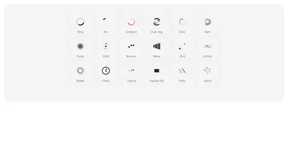
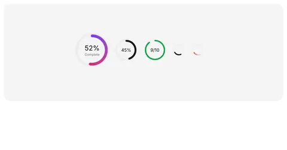
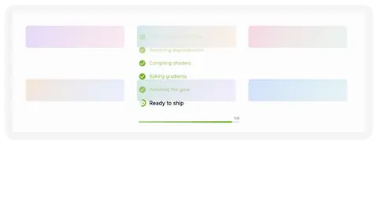

3 components · Loaders & Progress
Loaders and progress indicators for egui
Spinners, progress rings and multi-step loaders that animate smoothly and stop repainting when they are done.
All Loaders & Progress components

Spinners
Loaders & ProgressEighteen loader styles in one widget: rings, arcs, dots, bars, pulses, orbits, waves, grids, helixes and more.

Progress Ring
Loaders & ProgressCircular progress with a centered value, sub-label, gradient arcs and an indeterminate spin.

Multi Step Loader
Loaders & ProgressAn overlay listing the steps of a long task; each checks off in turn while the current one is highlighted and centered.